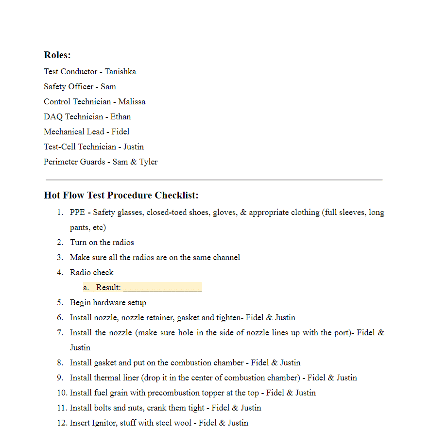
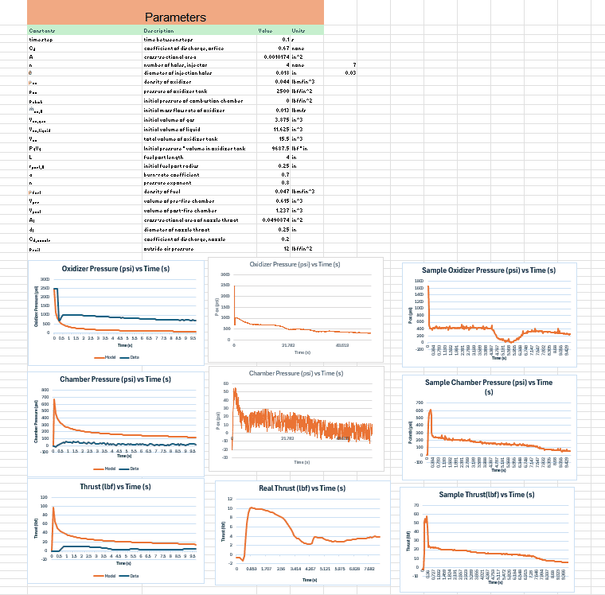

Coursework
Hybrid Rocket Propulsion

Overview
For my freshman ASEN 1304: Introduction to Rocket Engineering class, the final project over two or so months was to test and analyze a hybrid rocket engine. The goal was to understand the internal mechanisms of hybrid rocket engines, and how to use tools to predict performance and analyze test data.
My Contribution
I was largely in charge of doing the Excel sheet calculations, so by using Bernoulli's and other relevant equations, I was able to predict the performance of the hybrid rocket engine. I also helped with the test plan, and compared the predicted performance to real data collected in the test cell. I also modeled the nozzle that was used in the test cell.


Results
We ended up having a successful test, and the data collection went well. I learned the basics of mathmateical modeling and how to use it to predict performance. I also got a lot better at using Excel and Solidworks, as well as understanding how to come up with test procedures and safety measures.